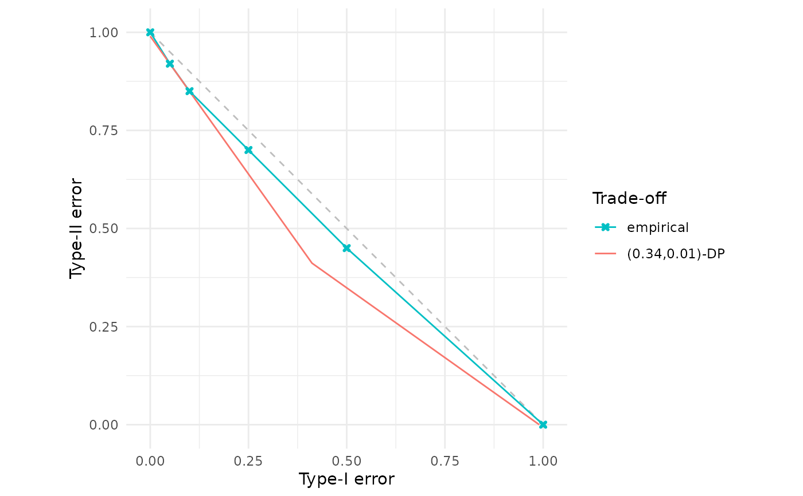
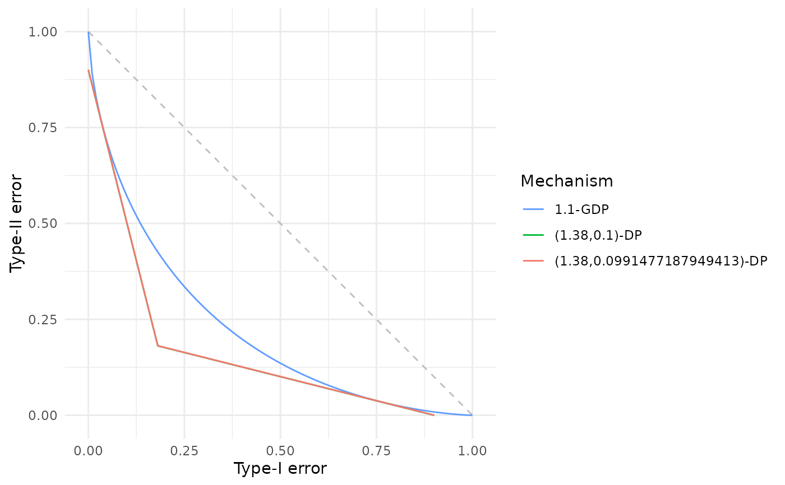
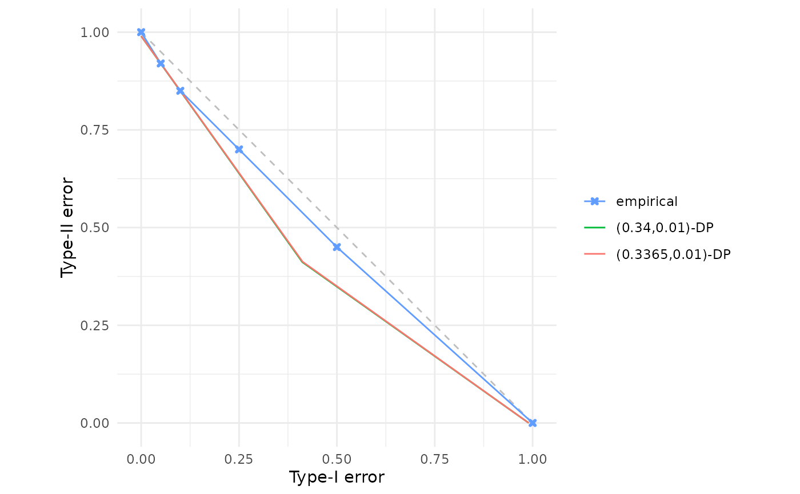

(epsilon, delta)-differential privacy parameters lower bounding empirical trade-off points
Source:R/est_epsdelta.R
est_epsdelta.RdEstimates the \((\varepsilon, \delta)\)-differential privacy parameters that lower bound a given set of empirical trade-off points. This function uses numerical optimisation to identify the tightest \((\varepsilon, \delta)\)-DP guarantee consistent with observed Type-I/Type-II error trade-offs, holding either \(\varepsilon\) or \(\delta\) fixed whilst optimising over the other parameter. Note: due to the numerical optimisation involved, this is only an approximation.
Arguments
- x
One or more f-DP trade-off specifications to be lower bounded. Accepts the same flexible input types as
fdp():A function (user-defined or built-in, e.g.,
gdp()) that when called with a numeric vectoralphareturns a data frame with columnsalphaandbeta;A data frame with columns
alphaandbetacontaining empirical trade-off points;A numeric vector of length 101 (interpreted as
betavalues on the canonical gridalpha = seq(0, 1, by = 0.01)).
The function extracts all Type-I/Type-II error coordinates and finds the minimal \((\varepsilon, \delta)\)-DP parameters lower bounding them.
- epsilon
Optional numeric scalar specifying a fixed value of \(\varepsilon \ge 0\). If supplied, the function searches for the minimal \(\delta \in [0,1]\) such that the \((\varepsilon, \delta)\)-DP trade-off lower bounds
x. Exactly one ofepsilonordeltamust be specified. Default isNULL.- delta
Optional numeric scalar specifying a fixed value of \(\delta \in [0, 1]\). If supplied, the function searches for the minimal \(\varepsilon \ge 0\) such that the \((\varepsilon, \delta)\)-DP trade-off lower bounds
x. Exactly one ofepsilonordeltamust be specified. Default isNULL.- dp
Integer scalar specifying the number of decimal places of precision for the result (with careful rounding employed to ensure the bound holds). Must be a non-negative integer. Default is
2L.
Value
A \((\varepsilon, \delta)\)-DP trade-off function object (see epsdelta()) of class c("fdp_epsdelta_tradeoff", "function").
This represents the tightest \((\varepsilon, \delta)\)-DP trade-off function that lower bounds the input x.
Details
This function numerically solves an inverse problem in the f-differential privacy framework: given empirical trade-off points \(\{(\alpha_i, \beta_i)\}_{i=1}^n\) characterising the distinguishability between output distributions of a randomised mechanism on neighbouring datasets, find the minimal classical \((\varepsilon, \delta)\)-DP parameters such that the \((\varepsilon, \delta)\)-DP trade-off function lower bounds all observed points.
Warning: since this is a numerical optimisation on a finite set of trade-off points, there is no mathematical guarantee of correctness. As such, the \((\varepsilon, \delta)\) found ought best to be viewed as an approximate lower bound on the true values, since there could be intermediate trade-off points that are not supplied which cause the true values to be larger. For example, consider:
This code will return \(\varepsilon=1.45\), yet Corollary 1, p.16, in Dong et al. (2022) means the exact answer here is \((\varepsilon = 1.45, \delta = 0.000544\dots)\) and that indeed there does not in general exist any finite \(\varepsilon\) solution for \(\delta = 0\).
Note: for lower bounding \(\mu\)-Gaussian Differential Privacy one should use gdp_to_epsdelta() instead, which employs exact theoretical results from the literature!
This function may be useful for post-hoc privacy auditing, privacy budget allocation, or mechanism comparison.
Mathematical formulation
The \((\varepsilon, \delta)\)-DP trade-off function \(f_{\varepsilon,\delta} \colon [0,1] \to [0,1]\) is piecewise linear (see epsdelta()).
This function seeks parameters \((\varepsilon, \delta)\) such that
$$f_{\varepsilon,\delta}(\alpha_i) \le \beta_i \quad \text{for all } i = 1, \ldots, n$$
whilst minimising either \(\varepsilon\) (if delta is fixed) or \(\delta\) (if epsilon is fixed).
Exactly one of epsilon or delta must be specified by the user; the function then searches for the minimal value of the unspecified parameter.
The optimisation first verifies whether any solution exists within reasonable bounds (\(\varepsilon < 30\) or \(\delta < 1\)), then constructs an objective measuring the signed vertical distance between the empirical points and the candidate \((\varepsilon, \delta)\)-DP curve.
A numerical root finder then seeks the parameter value where this crosses zero, with the solution rounded up to the specified decimal precision (dp).
There are then checks that the rounded bound holds numerically, with incremental adjustment if necessary to guarantee \(f_{\varepsilon,\delta}(\alpha_i) \le \beta_i\) for all \(i\) within machine precision.
References
Dong, J., Roth, A. and Su, W.J. (2022). “Gaussian Differential Privacy”. Journal of the Royal Statistical Society Series B, 84(1), 3–37. doi:10.1111/rssb.12454 .
See also
epsdelta() for constructing \((\varepsilon, \delta)\)-DP trade-off functions with known parameters,
est_gdp() for the analogous estimation problem in the Gaussian DP framework,
fdp() for plotting and comparing trade-off functions.
For lower bounding \(\mu\)-Gaussian Differential Privacy, see gdp_to_epsdelta() which uses exact theoretical results from the literature.
Examples
# Estimate epsilon given fixed delta for empirical trade-off points
# Note: unrealistically small set of points, in practice this would be a
# collection of potentially thousands of points representing multiple
# trade-off functions, the collection of which should be lower bounded.
empirical <- data.frame(
alpha = c(0.00, 0.05, 0.10, 0.25, 0.50, 1.00),
beta = c(1.00, 0.92, 0.85, 0.70, 0.45, 0.00)
)
result <- est_epsdelta(empirical, delta = 0.01)
result # Print the estimated parameters
#> (ε, δ)-Differential Privacy Trade-off Function
#> Parameters:
#> ε = 0.34
#> δ = 0.01
# Estimate delta given fixed epsilon
result2 <- est_epsdelta(empirical, epsilon = 1.0)
result2
#> (ε, δ)-Differential Privacy Trade-off Function
#> Parameters:
#> ε = 1
#> δ = 0
# Visualise the fit
fdp(empirical, result, .legend = "Trade-off")

# Find epsilon bounding a Gaussian DP mechanism with delta = 0.1 and compare
# with the exactly computed values
gdp_mechanism <- gdp(1.1)
approx_dp <- est_epsdelta(gdp_mechanism, delta = 0.1)
dp <- gdp_to_epsdelta(1.1, environment(approx_dp)$epsilon)
fdp(gdp_mechanism, approx_dp, dp,
.legend = "Mechanism")

# Compare precision levels
result_2dp <- est_epsdelta(empirical, delta = 0.01, dp = 2L)
result_4dp <- est_epsdelta(empirical, delta = 0.01, dp = 4L)
fdp(empirical, result_2dp, result_4dp)
